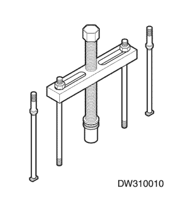

Epica | ||||||||
| ||||||||
| Aplicación | N•m | Árbol de transmisión izquierdo | Articulación |
| Tornillo de fijación del interruptor de contacto | 2.5 | - | 22 |
| Tornillos del soporte superior del conjunto de la camisa de la columna de la dirección | 22 | 16 | - |
| Tuercas del soporte inferior del conjunto de la camisa de la columna de la dirección | 22 | 16 | - |
| Tornillo de presión de la junta universal del eje de la dirección | 22 | 16 | - |
| Tuerca del volante | 35 | 26 | - |
| Tornillos de los paneles de recubrimiento superior e inferior de la columna de la dirección | 2.5 | - | 22 |
|   | DW310-010 Extractor del volante |
| Comprobaciones | Medida |
| Compruebe si el cilindro de la cerradura está dañado. | Sustituya el cilindro de la cerradura. |
| Compruebe si el interruptor de contacto no se mueve libremente. | Lubrique el interruptor de contacto. |
| Compruebe si la carcasa de la columna de la dirección está dañada o agarrotada. | Desmonte el eje de la dirección y limpie la carcasa de la columna de la dirección. Sustituya la carcasa de la columna de la dirección si fuera necesario. |
| Comprobaciones | Medida |
| Compruebe si el cilindro de la cerradura está dañado. | Sustituya el cilindro de la cerradura. |
| Compruebe si el interruptor de contacto no se mueve libremente. | Lubrique el interruptor de contacto. |
| Compruebe si la carcasa de la columna de la dirección está dañada o agarrotada. | Desmonte el eje de la dirección y limpie la carcasa de la columna de la dirección. Sustituya la carcasa de la columna de la dirección si fuera necesario. |
| Comprobaciones | Medida |
| Compruebe si el cilindro de la cerradura está dañado. | Sustituya el cilindro de la cerradura. |
| Compruebe si el interruptor de contacto no se mueve libremente. | Lubrique el interruptor de contacto. |
| Compruebe la existencia de una gran desalineación entre el alojamiento y la tapa. | Alinee de nuevo la tapa con respecto al alojamiento. Sustituya la tapa en caso necesario. |
| Compruebe si el soporte de fijación del interruptor de contacto está doblado. | Sustituya el soporte de fijación del interruptor de contacto. |
| Comprobaciones | Medida |
| Compruebe que el interruptor de contacto esté debidamente ajustado. | Ajuste de nuevo el interruptor de contacto. |
| Compruebe si el cilindro de la cerradura está dañado. | Sustituya el cilindro de la cerradura. |
| Comprobaciones | Medida |
| Compruebe si las juntas entre la columna de la dirección y el mecanismo de la dirección están mal montadas. | Apriete los tornillos de presión de la junta universal del eje de la dirección. Sustituya las juntas del eje de la dirección si fuera necesario. |
| Compruebe si el cojinete del eje de la dirección está desgastado o dañado. | Sustituya el cojinete del eje de la dirección. |
| Compruebe si a la rótula le falta lubricación. | Lubrique la rótula. |
| Compruebe si hay falta de lubricación en el eje de la dirección. | Lubrique el cojinete del eje de la dirección. |
| Compruebe si el anillo elástico de retención del eje no está bien instalado. | Ajuste el anillo elástico de retención del eje. Sustituya el anillo elástico de retención del eje si fuera necesario. |
| Comprobaciones | Medida |
| Compruebe si el cojinete del eje de la dirección está desgastado o dañado. | Sustituya el cojinete del eje de la dirección. |
| Compruebe si la junta guardapolvo esta deformada o mal montada. | Sustituya la junta guardapolvo. |
| Compruebe si están dañados los cojinetes superior o inferior. | Sustituya el cojinete superior o inferior. |
| Compruebe si las juntas universales del eje de la dirección no se mueven libremente. | Engrase las juntas universales del eje de la dirección. Sustituya las juntas universales del eje de la dirección si fuera necesario. |
| Comprobaciones | Medida |
| Compruebe si los tornillos de fijación del soporte de la columna de la dirección están bien montados. | Apriete los tornillos de fijación del soporte de la columna de la dirección. |
| Compruebe si hay roturas en las tuercas soldadas de la camisa de la columna de la dirección. | Sustituya la camisa de la columna de la dirección. |
| Compruebe si están flojos los tornillos del soporte de la carcasa a la camisa de la columna de la dirección. | Apriete los tornillos del soporte. |
| Comprobaciones | Medida |
| Compruebe la existencia de una holgura excesiva entre los diámetros de los taladros del soporte del volante o del alojamiento y los de los pasadores de giro. | Sustituya los pasadores de articulación por otros del tamaño correcto. |
| Compruebe si el cojinete superior está debidamente asentado en el alojamiento. | Asiente correctamente el cojinete superior. Sustituya el cojinete superior si fuera necesario. |
| Compruebe si los tornillos del soporte de la carcasa de la columna de la dirección están flojos. | Apriete los tornillos del soporte de la carcasa de la columna de dirección. |
| Comprobaciones | Medida |
| Compruebe si los amortiguadores superiores de abatimiento están desgastados. | Sustituya los amortiguadores superiores de abatimiento. |
| Compruebe si el muelle de la inclinación se mueve con dificultad. | Ajuste el muelle de la inclinación. Sustituya el muelle de la inclinación si fuera necesario. |
| Comprobaciones | Medida |
| Compruebe si está mal montado el interruptor del intermitente. | Desmonte e inspeccione el interruptor del intermitente. Vuelva a montar el interruptor. |
| Compruebe si hay componentes del mecanismo de cancelación rotos o si falta algún componente. | Sustituya el mecanismo de cancelación. |
| Compruebe si hay suciedad en el alojamiento del interruptor del intermitente. | Elimine toda la suciedad. |
| Comprobaciones | Medida |
| Compruebe si hay componentes del mecanismo de cancelación rotos o si falta algún componente. | Sustituya el mecanismo de cancelación. |
| Comprobaciones | Medida |
| Compruebe si están mal montados el interruptor o la palanca del intermitente/luces largas-cortas. | Desmonte y verifique el interruptor y la palanca del intermitente/luces largas-cortas. Monte de nuevo el interruptor y la palanca del intermitente/luces largas-cortas. |
| Compruebe si hay suciedad en el alojamiento del interruptor del intermitente/luces largas-cortas. | Elimine toda la suciedad. |
| Comprobaciones | Medida |
| Compruebe si hay algún suspensor del muelle roto o alguna almohadilla de presión de la indicación de cambio de carril rota. | Sustituya el suspensor del muelle o la almohadilla de presión de la indicación de cambio de carril. |
| Compruebe si el muelle de la indicación de cambio de carril funciona correctamente. | Sustituya el muelle de la indicación de cambio de carril. |
| Compruebe si está mal montado el interruptor del intermitente. | Sustituya el interruptor del intermitente. |
| Comprobaciones | Medida |
| Compruebe si hay alguna intermitencia defectuosa. | Sustituya la intermitencia. |
| Compruebe si el interruptor del intermitente está defectuoso. | Sustituya el interruptor del intermitente. |
| Compruebe si hay alguna conexión incorrecta en el conector del chasis a la columna. | Conecte de nuevo el conector de la columna al chasis. |
| Comprobaciones | Medida |
| Compruebe si hay alguna intermitencia defectuosa. | Sustituya la intermitencia. |
| Compruebe si el interruptor del intermitente está defectuoso. | Sustituya el interruptor del intermitente. |
| Compruebe si hay alguna conexión incorrecta en el conector del chasis a la columna. | Conecte de nuevo el conector de la columna al chasis. |
| Comprobaciones | Medida |
| Compruebe si el interruptor del intermitente está defectuoso. | Sustituya el interruptor del intermitente. |
| Compruebe si hay alguna conexión incorrecta en el conector del chasis a la columna. | Conecte de nuevo el conector de la columna al chasis. |
| Comprobaciones | Medida |
| Compruebe si hay alguna conexión incorrecta en el conector del chasis a la columna. | Conecte de nuevo el conector de la columna al chasis. |
| Comprobaciones | Medida |
| Compruebe si el interruptor de contacto está dañado. | Sustituya el interruptor de contacto. |
| Compruebe si el interruptor de contacto está mal montado. | Desmonte e inspeccione el interruptor de contacto. Vuelva a montar el interruptor de contacto. |
| Compruebe si el conector eléctrico del interruptor de contacto está mal montado. | Conecte de nuevo el conector eléctrico del interruptor de contacto. Sustituya el conector eléctrico del interruptor de contacto. |
| Comprobaciones | Medida |
| Compruebe si el interruptor de contacto está dañado. | Sustituya el interruptor de contacto. |
| Compruebe si el interruptor de contacto está mal montado. | Desmonte e inspeccione el interruptor de contacto. Vuelva a montar el interruptor de contacto. |
| Comprobaciones | Medida |
| Compruebe si el interruptor del limpiaparabrisas está dañado. | Sustituya el interruptor del limpiaparabrisas/control de la velocidad de crucero. |
| Compruebe si está mal montado el interruptor del limpiaparabrisas. | Desmonte y verifique el interruptor del limpiaparabrisas/control de la velocidad de crucero. Vuelva a montar el interruptor del limpiaparabrisas/control de la velocidad de crucero. |
| Compruebe si el interruptor de control de la velocidad de crucero está dañado. | Sustituya el interruptor del limpiaparabrisas/control de la velocidad de crucero. |


| © Copyright Chevrolet Europe. Reservados todos los derechos |